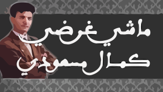

ﺑﺴﻢ اﻟﻠﻪ اﻟﺮﺣﻤﺎﻥ اﻟﺮﺣﻴﻢ
- 
- ﻣﺮﺣﺒﺎ ﺑﻴﻜﻢ٠
ﺗﻌﺘﺒﺮ اﻟﻤﻮﺳﻴﻘﻰ اﻟﺠﺰاﺋﺮﻳﺔ ﻋﺮﻳﻘﺔ ﻣﻦ ﺣﻴﺚ اﻟﻌﺎﺩاﺕ ﻭ اﻟﺘﻘﺎﻟﻴﺪ ﻛﻤﺎ ﺃﻧﻬﺎ ﺛﻤﺘﻞ اﻟﺸﻌﺐ ﺑﺄﻧﻐﺎﻣﻬﺎ اﻟﺠﻤﻴﻠﺔ ﻭ اﻟﺮاﺋﻌﺔ، ﺗﺤﻀﺎ اﻟﻤﻮﺳﻴﻘﻰ اﻟﻔﻠﻜﻠﻮﺭﻳﺔ اﻟﻤﺴﻤﺎﺓ اﻟﺸﻌﺒﻲ ﺑﺸﻌﺒﻴﺔ ﻛﺒﻴﺮﺓ، ﻭ ﺗﺤﻤﻞ اﻟﻜﻠﻤﺎﺕ ﻣﻌﺎﻧﻲ ﺷﻌﺮﻳﺔ ﺟﻤﻴﻠﺔ ﺗﻌﻄﻲ ﻓﻜﺮﺓ ﻋﻦ اﻟﺤﻴﺎﺓ اﻟﻴﻮﻣﻴﺔ ﺃﻭ ﻋﻦ ﻧﻔﺴﻴﺔ اﻟﻤﻠﻘﻲ ﺑﺎﻟﺠﺰاﺋﺮ. - ﻫﺎﺩا اﻟﺘﻄﺒﻴﻖ ﻓﻴﻪ اﻟﻘﺼﺎﺋﺪ ﻭ اﻻﺳﺘﺨﺒﺎﺭاﺕ اﻟﻠﻲ ﺟﺎﺑﻮﻫﺎ ﺑﺰاﻑ ﻣﻦ اﻟﺸﻴﻮﺧﺎ اﻟﻠﻲ ﻳﻌﺘﺒﺮﻭ ﺭﻣﻮﺯ ﻟﻬﺎﺩ اﻟﻤﻮﺳﻴﻘﻰ ﻭﻣﻨﻬﻢ اﻟﺤﺎﺝ ﻣﺤﻤﺪ اﻟﻌﻨﻘﺔ: ﺃﺷﻬﺮ ﻋﺎﺯﻑ ﻟﻬﺬا اﻟﻨﻮﻉ ﻣﻦ اﻟﻤﻮﺳﻴﻘﻰ اﻟﺠﺰاﺋﺮﻳﺔ, ﺑﻮﺟﻤﻌﺔ اﻟﻌﻨﻘﻴﺲ, اﻟﺤﺎﺝ ﺑﻮﺭﺣﻠﺔ, اﻟﺤﺎﺝ ﻣﻨﻮﺭ, ﺩﺣﻤﺎﻥ اﻟﺤﺮاﺷﻲ, ﻋﺒﺪ اﻟﻘﺎﺩﺭ ﺷﻌﻮ, ﻋﻤﺮ اﻟﺰاﻫﻲ ﻭ اﻟﻬﺎﺷﻤﻲ ﻗﺮﻭاﺑﻲ.
- Le poète populaire ou Enadir compose son poème la qsida de plusieurs parties ou « aqsam ». L'opération de diviser la qsida en parties s'appelle « lfsala » (coupe). Alors, la qsida est un poème complet de langue dialectale. Par convention, la qsida débute par une sorte d'introduction nommée Edokhoul (entrée) premier fragment de la qsida qui comporte plus souvent El-basmala (fait de prononcer besmellah au nom du Dieu ou le discours destiné à soi même ou à autrui. Puis se succèdent les parties séparées par El-harba lors de l'exécution (trait, pique), elle s'appelle aussi El-aazma par laquelle se distingue la qsida de malhoun des autres qui traitent le même sujet. Elle se répète à la fin de chaque partie, par cela, elle ressemble en quelque sorte à ce que nous appelons refrain en poésie française
- Le nombre de parties (El aqsam) il varie d'une qsida à l'autre, même le nombre de vers constitutifs de chaque partie peut aussi varier selon le poète et la nature du sujet. Le nombre de parties est compris entre quatre et dix, aussi celui des vers de chaque partie peut dépasser la dizaine. Le poète introduit au début de chaque partie quelques vers que nous pouvons diviser en deux types El-aroubi et Enawaïir (noria, roue) ou swirhat ou lqrasa. La dernière partie (Lqism el akhir) : elle peut se prolonger plus que les autres. Elle comporte généralement le nom du poète, la date de composition, le salut et la prière pour les âmes de chanteurs. De même, elle comporte la demande de l'intercession du prophète, la date de sa composition et la satire des rivaux. Mais il y a des poètes qui ne terminent pas leurs poèmes par leurs dernières parthes, ils y ajoutent une partie qu'ils appellent dridka ; une partie qui conclut la qsida et quand elle existe, elle comporte ce que la dernière partie peut contenir. Elle est une partie variable d'un poète à l'autre et d'une qsida à l'autre